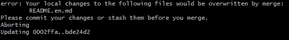
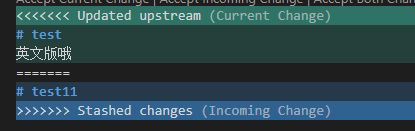
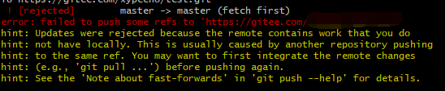
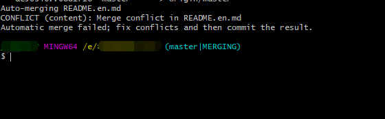
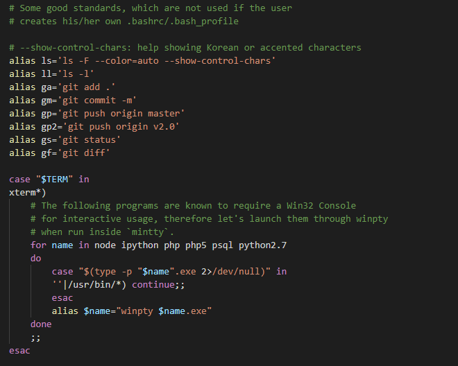
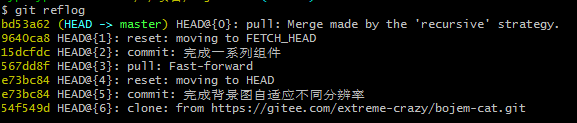

git的常用操作
很青的青蛙
3月 02, 2018
1、从远程仓库获取代码到本地
git clone https://gitee.com/xxx/xxx.git //直接克隆了默认的master分支下的代码
git clone -b dev https://gitee.com/xxx/xxx.git //克隆dev分支下的代码，可把dev换成你想克隆的任意分支
git clone https://gitee.com/xxx/xxx.git --depth 3 // 只clone最近3次的记录(代码是完整的)，这段命令对于commit次数较多，clone特别慢时有效
2、添加远程仓库
该操作一般是fork项目后，想更新fork的项目时使用
git remote -v //执行该命令后，会列出当前程序对应的所有远程版本仓库的信息，含仓库名和仓库地址
git remote add xoxoxo https://gitee.com/xxx/xxx.git //添加远程仓库，‘xoxoxo’代表该分支的名字（自己随便取），后面的分支的地址
git pull xoxoxo dev //获取该远程项目下面dev分支的代码
3、代码提交
git pull origin master // 多人合作时，提交代码前需要先pull以防文件冲突
git add .
git commit -m '这里面写修改代码的备注'
git push origin master //提交到master分支
git push origin dev // 提交到dev分支,如果你有dev分支的话
4、撤销本地文件的修改
git checkout -- src/views/equip/equipStateHistory.vue // -- 后面加文件的路径，即把文件恢复到没改之前的样子(相当于一直ctrl+z)
git checkout . //撤销本地所有文件的修改
5、对比本地修改的内容与上次push的内容的差异
git status //查看本地所有修改过的文件
git diff //查看所有修改过的文件的具体内容
git diff src/views/equip/components/MachineHome.vue //查看指定文件的修改内容，diff后面是文件路径
git difftool // 图形化比较两个版本间文件的差异
git difftool src/views/equip/components/MachineHome.vue // 图形化比较指定文件版本间的差异
6、对比本地代码与pull更新下来的代码的差异
git diff HEAD^ // 查看上次pull的详情
git diff HEAD^^ // 查看上次和上上次pull的详情
git diff HEAD~10 // 查看往上100个版本的修改详情
7、本地分支的相关操作
git branch --all // 查看本地所有分支
git checkout -b test // 在本地新建一个test分支
git checkout master // 切回master分支，这是切换分支的命令
// 下面是提交分支代码的命令,前3个命令均是在test分支执行
git add .
git commit -m '备注'
git push origin test // 此处的test是分支名字
git checkout master // 切换到master分支
git merge test // 合并test分支到master分支
git push origin master
// 下面是删除分支的命令
git branch --delete test // 删除本地分支
git push origin --delete branch // 删除远程分支和追踪分支
git remote update // 更新远程分支列表
8、代码回滚
git log // 查看提交历史，找出要回滚到的commit-id
git reset --hard xxx // xxx指上面的commit-id
git push -f origin master //强行提交
9、解决代码冲突
9.1 还没执行git add 命令前的代码冲突
如果你提交前(执行git add 命令前)想起来还没先pull，然后git pull命令报错时(如下图)，可以用下面的方案解决：

解决方案
git stash // 将本地的修改临时保存起来
git pull
git stash pop // 还原临时保存的修改
// 如果git自动合并成功则会提示 already up-to-date,否则需要手动修改冲突的内容，手动解决完冲突再次提交
git add .
git commit -m 'xxx'
git push origin master

Updated upstream 和=====之间的内容就是pull下来的内容，====和stashed changes之间的内容就是本地修改的内容
9.2 执行完git add，push代码时的冲突
多人合作提交代码时，一般先pull，然后再push。
但是如果忘了先pull，直接git add，然后push时出现冲突(如下图)应该这样解决。

解决方案
git pull // 如果自动合并出错(如下图)，会出现 (master|MERGING)标记
// 手动修改冲突的内容，手动解决完冲突再次提交
git add .
git commit -m 'xxx'
git push origin master

10、 设置别名(alias)
例如用ga来代替git add .这么长一段。
方法：
- 前往
git的安装目录找到C:\Program Files\Git\etc下的profile.d文件，用编辑器打开 - 把要设置的别名编辑进去(如下图)，保存退出
// 常用别名
alias ga='git add .'
alias gm='git commit -m'
alias gp='git push origin master'
alias gs='git status'
alias gf='git diff'

11、解决git切换分支相互影响的问题
在一个分支写新功能，但是突然要查看另外一个分支的内容，新功能又没写好不好提交，可以试试如下的方法
git stash // 隐藏当前工作现场，此时使用git status是查看不到修改的
git stash list // 查看暂存的所有内容列表
git stash pop // 恢复暂存的内容，同时从暂存区删除
git stash pop stash@{0} // 如果git stash list中有多个列表，可以使用这个命令
12、在当前分支合入其他分支某一次commit的修改
使用场景：小程序在某个新分支解决了包体积过大的问题，但是没有合并入master分支，我们从master分支新开分支时再次提示体积过大，再次重复一次劳动显然不是最优解
git log // 在已经解决好冲突的分支执行以下命令，记下commit id
// 切换到新分支，就可以把对应commitid的修改合入新分支了
git cherry-pick commitID
13、找回回滚时被回滚掉的代码
git reflog // 它记录了我们所执行过的所有命令，记下对应操作的id
git reset --hard xxx // 填写上面的id，执行完就会发现我们之前的代码又回来呢

14、清理无效的/在远程被删除的分支
git remote prune origin --dry-run // 查看可以清理的远程分支名字
git remote prune origin // 清理无效分支
15、修改.gitignore但是不生效
.gitignore 文件只能忽略那些还没有加入版本管理的文件，如果某些文件已经被纳入了版本管理中，则修改 .gitignore 是无效的。
解决方法是先把本地缓存删除，然后重新加入再提交
git rm -r --cached . // 从本地移除缓存,如果是某一个文件，则直接 git rm -r --cached xxx(文件名)
git add .
git commit -m 'xxx'
git push origin master